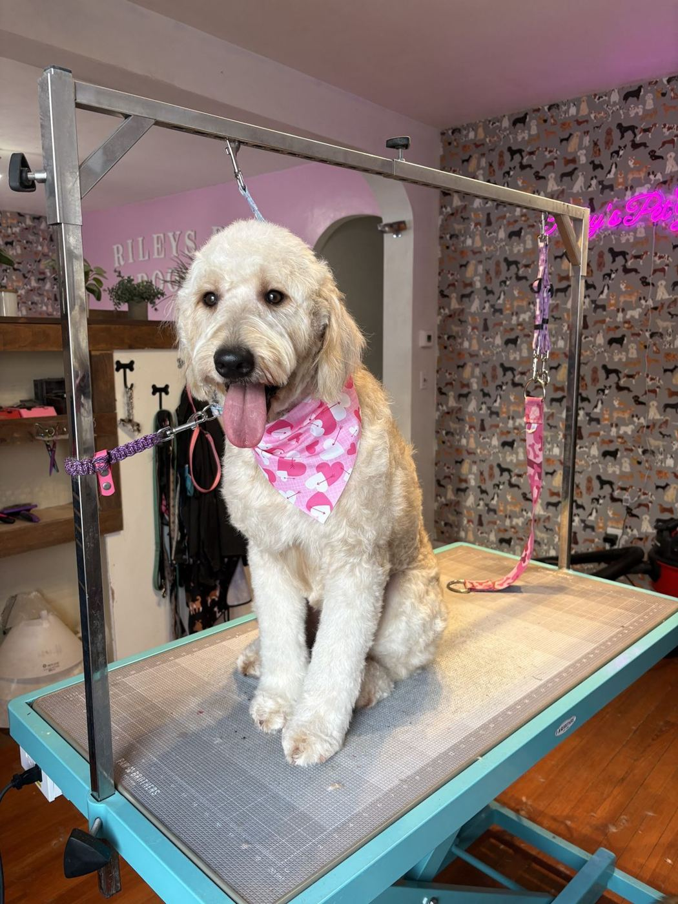
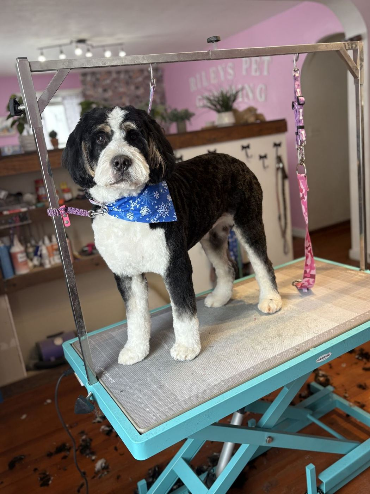
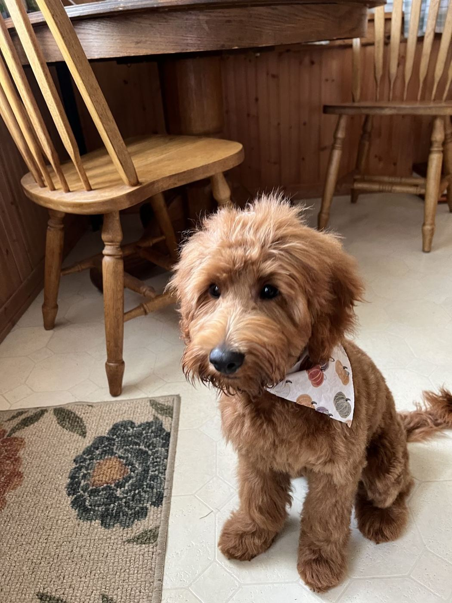
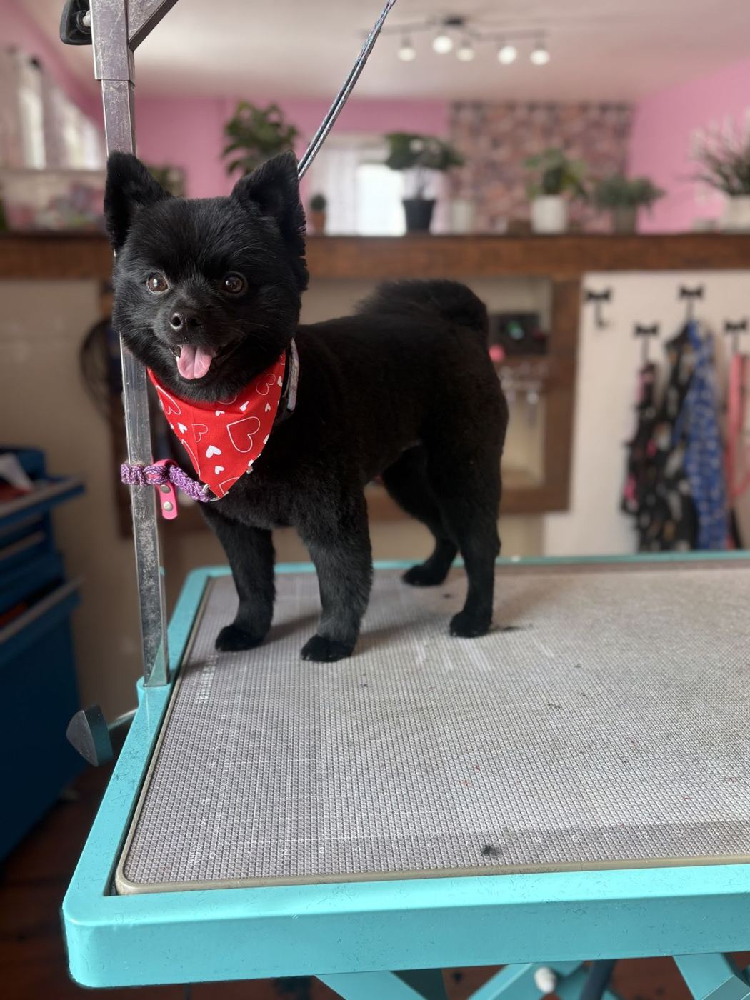
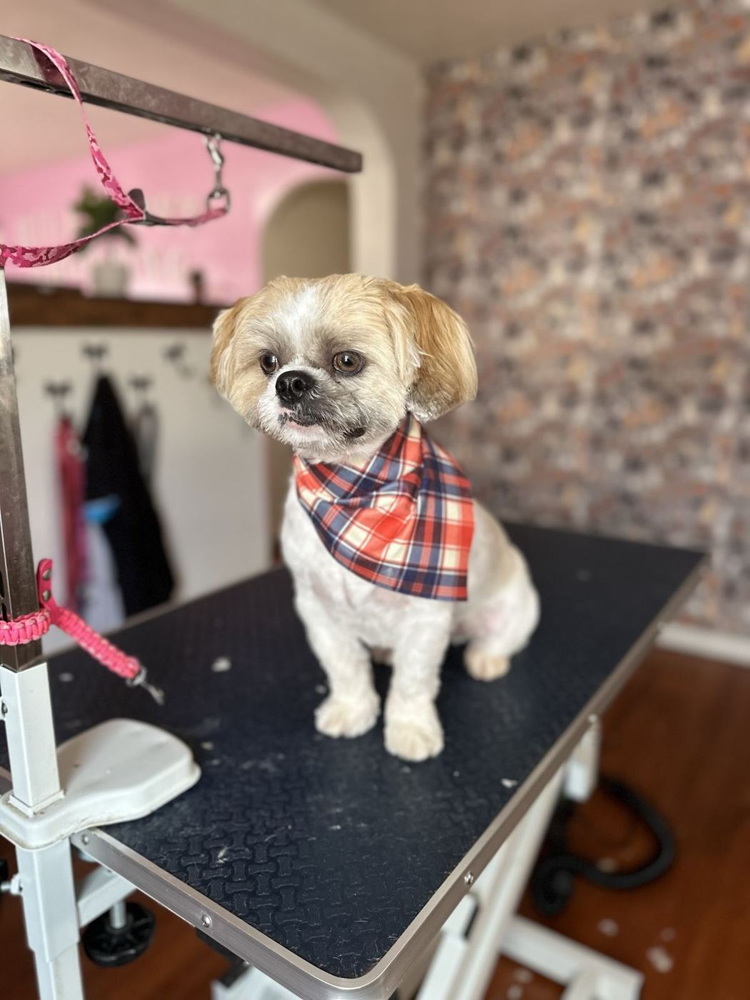
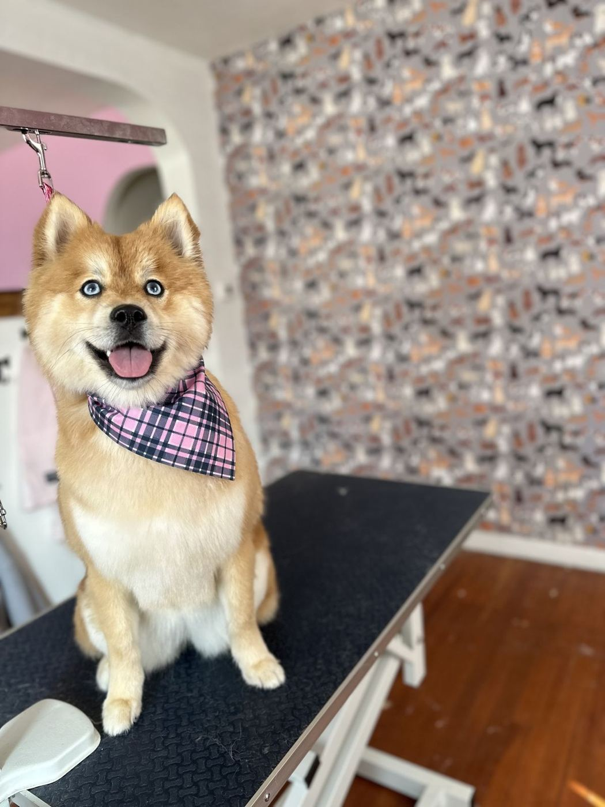
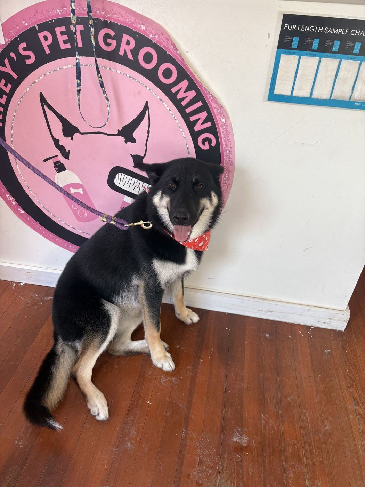

Shaylee
Owner. “Extremely polite and knowledgeable when it comes to pet grooming.” Customers say she is gentle and patient with every dog.








Owner. “Extremely polite and knowledgeable when it comes to pet grooming.” Customers say she is gentle and patient with every dog.
“Did a fantastic job with my standard poodle!” She even helps owners with nervous dogs feel at ease.